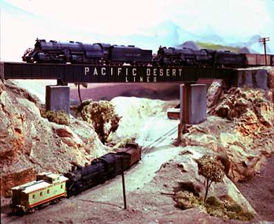

-- Back to da trains! --

This section of photos is early views of the layout and member's equipment, taken in the early 1980s by Don Mitchell. I have two more groups ready to go from Don as well. One group is of the San Diego Santa Fe Depot, modeled by Pete Peters. The model was featured in Model Railroader, January 1990 issue, as Model of the Month. Dons photos were used in MR, and the ones I scanned are from the same photo session. The second group will feature Norm Wrights amazing modeling. These photos are of equipment he scratch built in the early 80s, such as 'The Hiawatha', and the 'Denver Zephyr'.
Meanwhile, I will dig through what I have photographed, cajole other club members into digging into their stuff (our club Historian has a bunch), and try to shoot some new photos of the layout as it is today.
| |||
|---|---|---|---|
|
South end of the layout. Large El Centro Yard (4 ft. x 24 ft)
now occupies the space where the lumber is piled up.
| 68KB-- | Mitchell #12142 | |
|
North center of the layout, looking North.
Santa Fe Surfline to Los Angeles is on the left, and the Southern Pacific line between Bakersfield and El Centro is on the right. Town of Oceanside is at the end of the aisle. | 59KB-- | Mitchell #2145 | |
|
Just up the hill from Oceanside are the towns of Citrus Heights
and Cottonwood,
at almost the maximum height of the trackwork. Height at this point is about 60 inches above the floor. To the right of the photo is HiPass, the highest point at 63 inches. Scenery and town by past members David and Becky Salamon. | 72KB-- | Mitchell #2080 |
| |||
|---|---|---|---|
|
An E6 in Seaboard Coast Line livery passes through Del Mar area on
the ATSF Surfline.
Norm Wright did the Model. Scenery by Paul Madigan. | 104KB-- | Mitchell #2071 | |
|
John Stephen's brass Challenger hauls a mixed freight from Bakersfield to
El Centro in a mid 80s shot below Citrus Heights. | 126KB-- | Mitchell #2076 | |
|
A Santa Fe FT ABBA lashup heads down from Dulzura
to National City
with a hotshot of reefers. Head end power and reefers are from Tom Cataldo. | 86KB-- | Mitchell #2136 | |
|
Bill Wappes highballs his Pennsy T-2 (6-4-4-6) towards Los Angeles.
| 68KB-- | Mitchell #2039 |